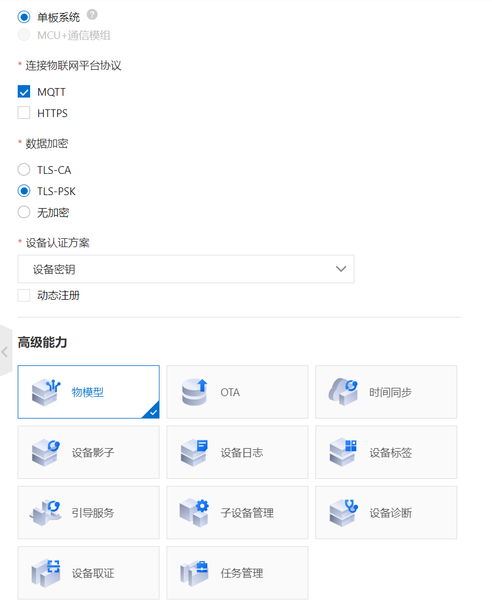
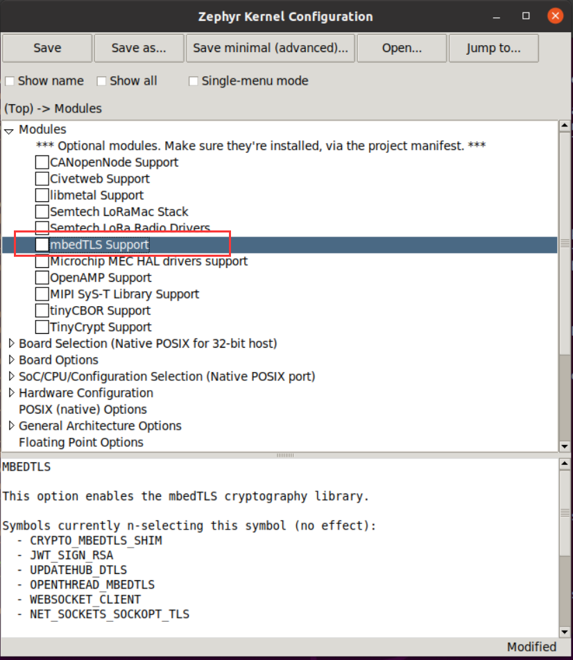
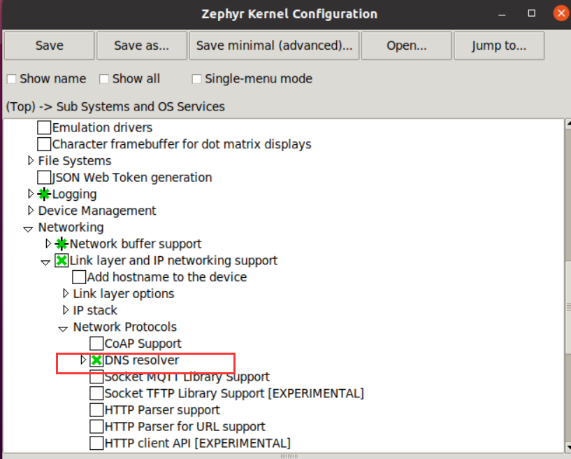
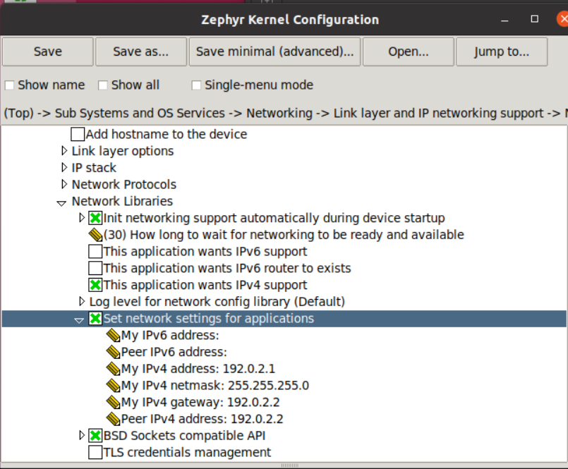

Zephyr native_posix 环境移植阿里云 LinkSDK 4.x
本文章主要介绍了如何将 LinkSDK 4.x 移植到 Zephyr 的 native_posix 环境上。
由于 LinkSDK 4.x 可以运行在 POSIX 兼容层，而且云平台也提供了相应的移植代码，还提供了 mbedtls。因此移植的主要工作是配置 Zephyr 的 POSIX 兼容层，关闭自带的 mbedtls，而且需要配置 IPv4 网络，为 LinkSDK 4.x 添加构建代码进行编译链接。
下载 LinkSDL 4.x
进入阿里云平台按照要求获取 SDK 4.x。
下载 SDK 时需要注意，选择不同的高级功能时，需要在后续修改构建文件才能参与构建。这里我只选择了物模型。

配置工程目录
如何进行应用程序开发，可以参考官方手册，这里我列出自己的移植。
首先进入一个准备开发应用程序的目录，我这里是
jackis@jackis-zephyr:~$ cd zephyrproject/gateway/
jackis@jackis-zephyr:~/zephyrproject/gateway$
然后创建文件和目录如下：
jackis@jackis-zephyr:~/zephyrproject/gateway$ tree -L 1
.
├── CMakeLists.txt
├── prj.conf
└── src
1 directory, 2 files
其中 CMakeLists.txt 是编译文件，prj.conf 是内核配置文件，src 目录是我们存放源代码的位置。
将前面下载的 LinkSDK 解压缩后放置到 src 目录下，并将里面的 demo 文件 mqtt_basic_demo.c 也复制一份到 src 目录下，结果如下
jackis@jackis-zephyr:~/zephyrproject/gateway$ tree -L 2
.
├── CMakeLists.txt
├── prj.conf
└── src
├── LinkSDK
└── mqtt_basic_demo.c
2 directories, 3 files
配置 Zephyr 内核
由于我们的运行环境是 native_posix，相应的 POSIX 兼容层环境会自动添加，不需要我们配置。
网络环境的配置参考：[Zephyr - natite_posix 运行 socket 例程](./Zephyr - natite_posix 运行 socket 例程)。
在当前的目录下输入
jackis@jackis-zephyr:~/zephyrproject/gateway$ west build -b native_posix -t guiconfig
进入内核配置 GUI 界面，在里面找到 mbedTLS Support，取消勾选。

在 Sub Systems and OS Services - Networking - Network Protocols 里勾选 DNS resolver 开启 DNS 服务。

然后在 Sub Systems and OS Services - Networking - Network Libraries - Set network settings for applications 里添加 IPv4 地址，网关地址。

如果嫌这样配置麻烦，可以在 prj.conf 文件里添加下述内容即可，它会自动地将当前工程所用的内核配置成上述模式。
# General config
CONFIG_NEWLIB_LIBC=y
# Networking config
CONFIG_NETWORKING=y
CONFIG_NET_IPV4=y
# CONFIG_NET_IPV6=y
CONFIG_NET_TCP=y
CONFIG_NET_SOCKETS=y
CONFIG_NET_SOCKETS_POSIX_NAMES=y
CONFIG_DNS_RESOLVER=y
CONFIG_DNS_SERVER_IP_ADDRESSES=y
CONFIG_DNS_SERVER1="8.8.8.8"
# Network driver config
CONFIG_TEST_RANDOM_GENERATOR=y
# Network address config
CONFIG_NET_CONFIG_SETTINGS=y
CONFIG_NET_CONFIG_NEED_IPV4=y
CONFIG_NET_CONFIG_MY_IPV4_ADDR="192.0.2.1"
CONFIG_NET_CONFIG_PEER_IPV4_ADDR="192.0.2.2"
CONFIG_NET_CONFIG_MY_IPV4_GW="192.0.2.2"
# Network debug config
CONFIG_NET_LOG=y
# POSIX API
CONFIG_POSIX_API=y
CONFIG_PTHREAD_IPC=y
CONFIG_MAX_PTHREAD_COUNT=20
CONFIG_SEM_VALUE_MAX=32767
CONFIG_POSIX_CLOCK=y
CONFIG_MAX_TIMER_COUNT=10
CONFIG_POSIX_MQUEUE=y
CONFIG_EVENTFD=y
CONFIG_EVENTFD_MAX=5
# Enable Mbed TLS configuration
CONFIG_MBEDTLS=n
编写构建文件
这里我们添加 CMakeLists.txt 里的内容，使用 CMake 构建语法，主要是将 LinkSDK 加入 Zephyr 的构建，参考官方手册以及其他例程的构建文件，我写的如下：
# Find Zephyr. This also loads Zephyr's build system.
cmake_minimum_required(VERSION 3.13.1)
find_package(Zephyr REQUIRED HINTS $ENV{ZEPHYR_BASE})
project(gateway)
# Add your source file to the "app" target. This must come after
# find_package(Zephyr) which defines the target.
FILE(GLOB app_sources src/*.c
src/LinkSDK/components/data-model/*.c
src/LinkSDK/core/*.c
src/LinkSDK/core/sysdep/*.c
src/LinkSDK/core/utils/*.c
src/LinkSDK/external/*.c
src/LinkSDK/external/mbedtls/library/*.c
src/LinkSDK/portfiles/aiot_port/*.c)
include_directories(./
src/LinkSDK/components/data-model
src/LinkSDK/core
src/LinkSDK/core/sysdep
src/LinkSDK/external/mbedtls/include
src/LinkSDK/core/utils)
target_sources(app PRIVATE ${app_sources})
测试
打开一个终端，进入 net-tools 目录，输入 ./net-setup.sh 创建一个以太网接口，这个在 [Zephyr - natite_posix 运行 socket 例程](./Zephyr - natite_posix 运行 socket 例程) 里有介绍。
然后再打开一个终端，进入应用工程目录，输入下述命令构建工程，
jackis@jackis-zephyr:~/zephyrproject/gateway$ west build -b native_posix
构建完成后再输入命令运行程序
jackis@jackis-zephyr:~/zephyrproject/gateway$ west build -t run
可以看到下述现象
jackis@jackis-zephyr:~/zephyrproject/gateway$ west build -t run
-- west build: running target run
[0/1] cd /home/jackis/zephyrproject/gateway/build && /home/jackis/zephyrproject/gateway/build/zephyr/zephyr.exe
WARNING: Using a test - not safe - entropy source
*** Booting Zephyr OS build zephyr-v2.4.0-8-g9c30e7946974 ***
[00:00:00.000,000] <inf> net_config: Initializing network
[00:00:00.000,000] <inf> net_config: IPv4 address: 192.0.2.1
[1611925016.544][LK-0313] MQTT user calls aiot_mqtt_connect api, connect
[1611925016.544][LK-0317] mqtt_basic_demo&a13FN5TplKq
[1611925016.544][LK-0318] 4780A5F17990D8DC4CCAD392683ED80160C4C2A1FFA649425CD0E2666A8593EB
establish mbedtls connection with server(host='a13FN5TplKq.iot-as-mqtt.cn-shanghai.aliyuncs.com', port=[443])
success to establish tcp, fd=4
success to establish mbedtls connection, fd = 4(cost 43270 bytes in total, max used 45882 bytes)
[1611925016.888][LK-0313] MQTT connect success in 332 ms
AIOT_MQTTEVT_CONNECT
heartbeat response
成功连接阿里云的 MQTT Broker 。